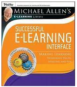

Shakshat Virtual Lab 
INDIAN INSTITUTE OF TECHNOLOGY GUWAHATI
Book

Successful E-learning Interface: Making Learning Technology Polite, Effective and Fun By Michael W. Allen
Articles
[1]. “A brief critique on the future of learning: assessing the potential for research” Contemporary approaches to research on learning environments published by world scientific publishing co.
[2]. “The Keys to Usability in e-Learning Websites” by Agnes Kukulska-Hulme and Lesley Shield (http://www.networkedlearningconference.org.uk/past/nlc2004/proceedings/individual_papers/kukulska_shield.htm )
URL's
http://www.usereffect.com/topic/25-point-website-usability-checklist
http://www.nigelbevan.com/papers/web%20usability%20standards.pdf
http://matriisi.ee.tut.fi/arvo/liitteet/PEG2003.pdf
http://www.qou.edu/arabic/researchProgram/eLearningResearchs/successfulImplementation.pdf
http://www.srlst.com/ijist/ijism-Vol6No2/ijism62-99-117.pdf
http://eprints.ioe.ac.uk/960/1/Jara2007Pedagogical.pdf
http://www.educatorstechnology.com/2011/01/21st-century-pedagogy-teachers-should.html
http://www.upsidelearning.com/blog/index.php/2010/04/06/the-real-cost-of-bad-elearning/
http://elearningweekly.wordpress.com/2010/09/24/5-ways-to-improve-bad-elearning/
http://www.johnconnell.co.uk/blog/?p=2247
http://www.articulate.com/rapid-elearning/more-than-a-dozen-ways-to-navigate-an-e-learning-course/